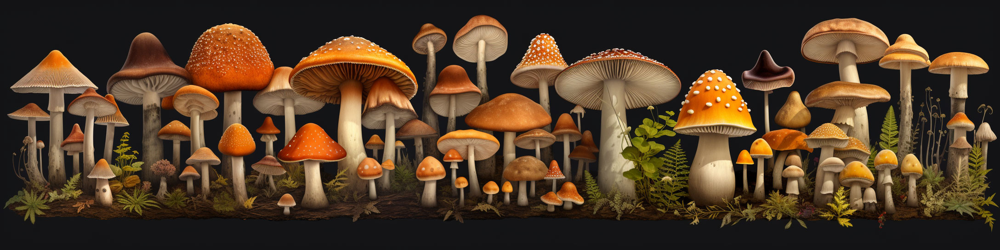

Machine Learning Projects
Featured Machine Learning Projects:
-
Using K Means to Predict Mushroom Edibility.

This project utilizes a repository from UCI based around mushrooms and their characteristics to predict if they are poisonous or edible based on user input.The machine learning process looks at characteristics from the trained dataset to determine if the features of the analyzed mushroom would indicate whether or not it is edible or poisonous.
View Project -
Image Classification using Python, TensorFlow, Matplotlib, and NumPy

This image classification project leverages a Convolutional Neural Network (CNN) to differentiate between AI-generated and real images. The workflow includes preprocessing images by resizing, augmenting, and normalizing them to improve model robustness. Using TensorFlow, the CNN model was trained with data augmentation, dropout, and L2 regularization to prevent overfitting. A binary classification approach enabled accurate prediction by training the model on labeled datasets of real and AI-generated images. The project also features a custom image classification function, which allows users to upload images and receive real-time predictions. This interactive aspect, along with model saving and loading capabilities, showcases the full deployment cycle for an image classifier model.
View Project